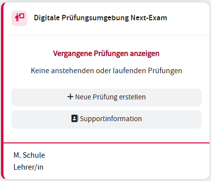
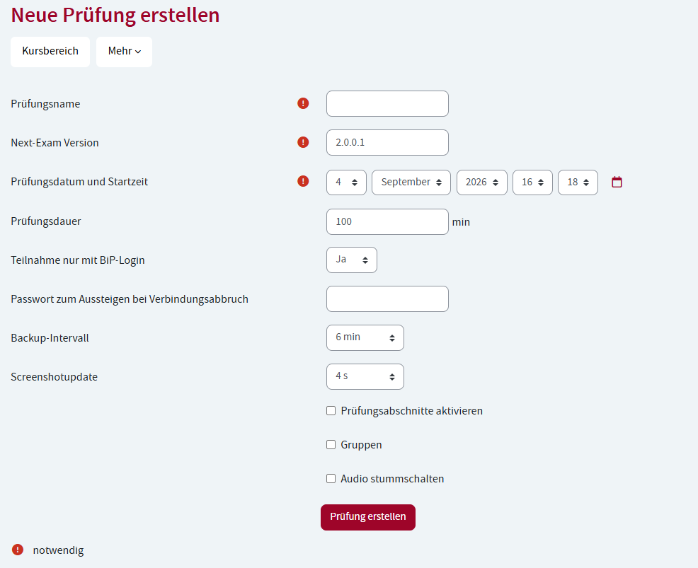
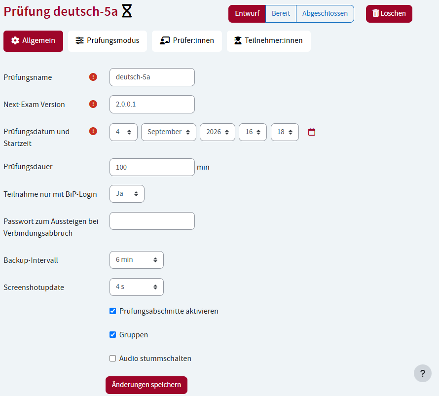

Bildungsportal (BiP) - Anleitung für Lehrpersonen
Das österreichische Bildungsportal ist ein zweiter, alternativer Weg, eine Prüfung zu konfigurieren – zusätzlich zur lokalen Konfiguration direkt in der Teacher-App. Die Prüfung läuft dabei nicht im Bildungsportal selbst; das Portal liefert lediglich die Konfiguration (Prüfungsmodus, Materialien, Gruppen, Zuordnung der Schüler:innen), Next-Exam führt die Prüfung wie gewohnt lokal aus.
- Im Bildungsportal stehen dieselben Konfigurationsmöglichkeiten wie im Teacher-Dashboard zur Verfügung (z. B. Prüfungsmodus, Materialien, Gruppen).
- Prüfungen können im Vorfeld vollständig vorbereitet werden, inklusive Zuordnung der teilnehmenden Schüler:innen.
- Jeder Prüfungsmodus (Mathematik, Sprachen, Online-Modi, Active Sheets, RDP, Lokale VM) kann über das Bildungsportal konfiguriert werden – die BiP-Anmeldung ist also kein eigener Prüfungsmodus, sondern ein alternativer Konfigurationsweg.
Diese Anleitung erklärt Schritt für Schritt, wie im BiP eine Prüfung anlegegt, konfiguriert und verwaltet werden kann.
1. Überblick auf dem Dashboard
Auf Ihrem Dashboard finden Sie den Block „Digitale Prüfungsumgebung Next-Exam“. Dort sehen Sie:
{kind=link}

- Nächste oder laufende Prüfungen – alle Prüfungen, die Sie selbst erstellt haben oder bei denen Sie als Prüfer:in (Aufsicht) eingetragen sind.
- Vergangene Prüfungen – bereits abgehaltene Prüfungen (können ein-/ausgeblendet werden).
- Zu jeder Prüfung sehen Sie Name, Datum sowie den aktuellen Status (siehe Abschnitt 5).
- Über den Button „Prüfung erstellen“ legen Sie eine neue Prüfung an.
- Über „Supportinformation“ gelangen Sie zum Notfallplan Ihrer Schule (siehe Abschnitt 8).
Lehrpersonen mit absolviertem Qualifizierungsseminar
Falls an Ihrer Schule noch nicht genügend Lehrpersonen die vorgeschriebene Next-Exam-Schulung absolviert haben, wird im Block ein Warnhinweis angezeigt.
2. Eine neue Prüfung erstellen
- Klicken Sie im Dashboard-Block auf „Prüfung erstellen“.
- Füllen Sie das Formular aus:
{kind=link}

| Feld | Erklärung |
|---|---|
| Prüfungsname | Pflichtfeld – Name der Prüfung |
| Next-Exam Version | Version der verwendeten Next-Exam-Software (Standard: 2.0.0.1) |
| Prüfungsdatum und Startzeit | Wann die Prüfung beginnt |
| Prüfungsdauer | Dauer in Minuten (Standard: 100) |
| Teilnahme nur mit BiP-Login | Legt fest, ob sich Teilnehmer:innen nur mit BiP-Zugang anmelden dürfen |
| Passwort zum Aussteigen bei Verbindungsabbruch | Optionales Passwort, mit dem Teilnehmer:innen die Prüfung bei Verbindungsabbruch vorzeitig verlassen können |
| Backup-Intervall | Wie oft automatisch ein Backup der Arbeit erstellt wird (in Minuten, 0 = aus) |
| Screenshotupdate | Wie oft ein Bildschirm-Screenshot zur Kontrolle übertragen wird (in Sekunden, 0 = aus) |
| Prüfungsabschnitte aktivieren | Erlaubt bis zu 4 unterschiedliche Abschnitte innerhalb einer Prüfung (z. B. verschiedene Aufgabenteile) |
| Gruppen aktivieren | Erlaubt es, Teilnehmer:innen in zwei Gruppen (A/B) mit unterschiedlichen Einstellungen/Aufgaben aufzuteilen |
| Audio stummschalten | Schaltet die Audioausgabe der Teilnehmer:innen-Geräte stumm |
- Klicken Sie auf „Prüfung erstellen“. Sie werden automatisch zur Bearbeitungsseite der neuen Prüfung weitergeleitet und dabei selbst als Prüfer:in eingetragen.
3. Eine Prüfung bearbeiten
Öffnen Sie eine Prüfung über den Bearbeiten-Link im Dashboard-Block. Die Bearbeitungsseite ist in vier Reiter unterteilt:
{kind=link}

3.1 Reiter „Allgemein“
Hier können Sie die Grunddaten (siehe Tabelle oben) nachträglich ändern und speichern.
Prüfung abgeschlossen
Sobald eine Prüfung auf „Abgeschlossen“ gesetzt wurde, können keine Einstellungen mehr verändert werden.
3.2 Reiter „Prüfungsmodus“
Hier legen Sie fest, wie die Prüfung inhaltlich abläuft.
- Haben Sie Prüfungsabschnitte aktiviert, wählen Sie zunächst oben den gewünschten Abschnitt (1–4) aus und geben ihm optional eine Bezeichnung.
- Wählen Sie den Prüfungsmodus:
| Modus | Anwendung |
|---|---|
| Mathematik | Prüfungen mit mathematischem Editor |
| Sprachen | Texteditor mit Rechtschreibhilfe, Korrekturrand für PDF-Export usw. |
| Eduvidual / Moodle | Verlinkung zu einer Eduvidual/Moodle-Seite, optional per Safe-Exam-Browser-Konfiguration |
| Google/Microsoft Forms | Prüfung über ein externes Formular |
| Webseite | Freigabe einer bestimmten Webseite während der Prüfung |
| Active Sheets | Prüfung auf Basis einer PDF-Vorlage |
| Microsoft365 | Prüfung mit Microsoft-365-Anwendungen |
- Je nach gewähltem Modus erscheinen zusätzliche Einstellungsfelder, zum Beispiel:
- Sprachen: Schriftart/-größe, Zeilenabstand, Korrekturrand-Position im PDF, Rechtschreibhilfe (ein-/ausschalten, Sprache, Vorschläge), Vorlagendatei hochladen, Audio-Wiedergabe beschränken.
- Eduvidual/Moodle: entweder eine URL angeben oder eine Safe-Exam-Browser-Konfigurationsdatei (inkl. Browser Exam Key und Passwort) hochladen.
- Webseite: Ziel-URL sowie optional das Blockieren von Subdomains bzw. anderen Pfaden.
- Active Sheets: PDF-Vorlagendatei hochladen.
- Ist „Gruppen aktivieren“ in der Prüfung eingeschaltet, können Sie zusätzlich die Option „Konfiguration pro Gruppe“ wählen, um Gruppe A und Gruppe B unterschiedlich zu konfigurieren (z. B. unterschiedliche Aufgaben).
Material hinzufügen: Im unteren Bereich können Sie beliebig viele zusätzliche Materialien für den Abschnitt hochladen – entweder als Datei oder als URL (mit optionaler Sperre von Subdomains/anderen Pfaden). Bei aktivierten Gruppen legen Sie zusätzlich fest, welcher Gruppe das Material zugeordnet ist.
3.3 Reiter „Prüfer:innen“
- Ansicht: zeigt alle aktuell zugewiesenen Prüfer:innen (Aufsichten). Sie können hier Personen auswählen und über den Button entfernen.
- Hinzufügen: über den zweiten Unterreiter wählen Sie weitere Personen aus einer Liste aus und fügen sie als Prüfer:in hinzu.
3.4 Reiter „Teilnehmer:innen“
- Ansicht: zeigt alle aktuell zugewiesenen Teilnehmer:innen.
- Sie können Teilnehmer:innen auswählen und entfernen.
- Ist die Gruppenfunktion aktiv, können Sie ausgewählte Teilnehmer:innen stattdessen einer anderen Gruppe (A/B) zuweisen, statt sie zu entfernen.
- Hinzufügen: wählen Sie weitere Teilnehmer:innen aus der Liste aus. Bei aktivierten Gruppen legen Sie dabei fest, welcher Gruppe die neuen Teilnehmer:innen zugeteilt werden.
Gruppenzuteilung
Wenn Sie die Gruppenfunktion nachträglich aktivieren, während bereits Teilnehmer:innen zugewiesen sind, werden diese automatisch der Gruppe A zugeteilt. Sie erhalten dazu einen Hinweis, damit Sie einen Teil der Klasse manuell in Gruppe B umverteilen können.
4. Prüfungsphase ändern
Oben auf der Bearbeitungsseite finden Sie drei Buttons, mit denen Sie die Phase der Prüfung wechseln:
| Phase | Bedeutung |
|---|---|
| Entwurf | Die Prüfung ist für Teilnehmer:innen noch nicht sichtbar. Nutzen Sie diese Phase, solange Sie die Prüfung noch vorbereiten. |
| Bereit | Die Prüfung ist für Teilnehmer:innen sichtbar. Das Betreten ist aber erst möglich, sobald die Prüfung in der Next-Exam-App tatsächlich geöffnet wird. |
| Abgeschlossen | Die Prüfung ist beendet. Es können keine Einstellungen mehr geändert werden. |
Klicken Sie einfach auf die gewünschte Phase, um zu wechseln.
5. Statusanzeige im Dashboard
Im Dashboard-Block wird jede Prüfung mit einem farbigen Symbol und der aktuellen Phase angezeigt (Entwurf / Bereit / Abgeschlossen), sodass Sie auf einen Blick sehen, in welchem Zustand sich Ihre Prüfungen befinden.
6. Eine Prüfung löschen
- Öffnen Sie die Prüfung oder klicken Sie direkt im Dashboard-Block auf das Löschen-Symbol bei der jeweiligen Prüfung.
- Bestätigen Sie die Sicherheitsabfrage „Wollen Sie die Prüfung wirklich löschen?“.
Daten
Das Löschen entfernt unwiderruflich alle Daten der Prüfung (Teilnehmer:innen, Prüfer:innen, Abschnitte, Einstellungen).
🔒 Eine bereits abgeschlossene Prüfung kann nicht mehr gelöscht werden.
7. Berechtigungen
Für die oben beschriebenen Funktionen benötigen Sie das Recht „Prüfungen bearbeiten“. Ohne dieses Recht können Sie höchstens Prüfungen ansehen, aber nicht anlegen, ändern oder löschen. Falls Ihnen Funktionen fehlen, wenden Sie sich an die Administration Ihrer Schule bzw. Organisation.
8. Supportinformationen (Notfallplan)
Über den Link „Supportinformation“ im Dashboard-Block gelangen Sie zu den hinterlegten Notfallinformationen und Kontaktpersonen Ihrer Organisation für den Fall von technischen Problemen während einer Prüfung. Nur berechtigte Personen können diese Informationen bearbeiten – alle anderen sehen die Seite in einer schreibgeschützten Ansicht.
9. Kurzübersicht / Checkliste für eine neue Prüfung
- ☐ Prüfung im Dashboard erstellen (Name, Datum, Dauer, Grundeinstellungen)
- ☐ Prüfungsmodus je Abschnitt festlegen und konfigurieren
- ☐ Ggf. Gruppen aktivieren und getrennt konfigurieren
- ☐ Zusätzliches Material hochladen (falls nötig)
- ☐ Prüfer:innen (Aufsichten) hinzufügen
- ☐ Teilnehmer:innen hinzufügen (ggf. mit Gruppenzuweisung)
- ☐ Phase auf „Bereit“ setzen, sobald alles vorbereitet ist
- ☐ Nach der Prüfung Phase auf „Abgeschlossen“ setzen
Bei technischen Problemen während einer laufenden Prüfung nutzen Sie bitte die Kontaktpersonen bzw. den Notfallplan unter „Supportinformation“.